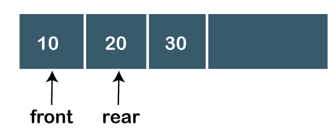
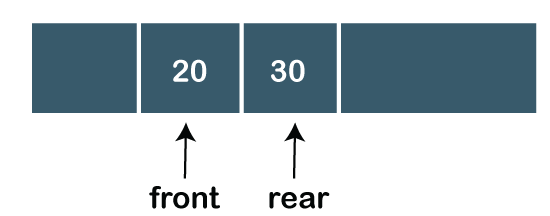
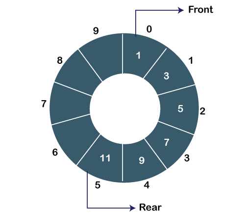

Queue
- 1. A queue can be defined as an ordered list which enables insert operations to be performed at one end called REAR and delete operations to be performed at another end called FRONT.
- 2. Queue is referred to be as First In First Out list.
- 3. For example, people waiting in line for a rail ticket form a queue.

Applications of Queue
- Queues are widely used as waiting lists for a single shared resource like printer, disk, CPU.
- Queues are used in asynchronous transfer of data (where data is not being transferred at the same rate between two processes) for eg. pipes, file IO, sockets.
- Queues are used as buffers in most of the applications like MP3 media player, CD player, etc.
- Queue are used to maintain the play list in media players in order to add and remove the songs from the play-list.
- Queues are used in operating systems for handling interrupts.
| Data Structure | Time Complexity | Space Compleity | |||||||
|---|---|---|---|---|---|---|---|---|---|
| Average | Worst | Worst | |||||||
| Access | Search | Insertion | Deletion | Access | Search | Insertion | Deletion | ||
| Queue | θ(n) | θ(n) | θ(1) | θ(1) | O(n) | O(n) | O(1) | O(1) | O(n) |
Types of Queue
There are four types of Queues:
1.Linear Queue
In Linear Queue, an insertion takes place from one end while the deletion occurs from another end. The end at which the insertion takes place is known as the rear end, and the end at which the deletion takes place is known as front end. It strictly follows the FIFO rule. The linear Queue can be represented, as shown in the below figure:

The above figure shows that the elements are inserted from the rear end, and if we insert more elements in a Queue, then the rear value gets incremented on every insertion. If we want to show the deletion, then it can be represented as:

In the above figure, we can observe that the front pointer points to the next element, and the element which was previously pointed by the front pointer was deleted.
The major drawback of using a linear Queue is that insertion is done only from the rear end. If the first three elements are deleted from the Queue, we cannot insert more elements even though the space is available in a Linear Queue. In this case, the linear Queue shows the overflow condition as the rear is pointing to the last element of the Queue.
2.Circular Queue
In Circular Queue, all the nodes are represented as circular. It is similar to the linear Queue except that the last element of the queue is connected to the first element. It is also known as Ring Buffer as all the ends are connected to another end. The circular queue can be represented as:

The drawback that occurs in a linear queue is overcome by using the circular queue. If the empty space is available in a circular queue, the new element can be added in an empty space by simply incrementing the value of rear.
3.Priority Queue
A priority queue is another special type of Queue data structure in which each element has some priority associated with it. Based on the priority of the element, the elements are arranged in a priority queue. If the elements occur with the same priority, then they are served according to the FIFO principle.
In priority Queue, the insertion takes place based on the arrival while the deletion occurs based on the priority. The priority Queue can be shown as:
The above figure shows that the highest priority element comes first and the elements of the same priority are arranged based on FIFO structure.
4.Deque
Both the Linear Queue and Deque are different as the linear queue follows the FIFO principle whereas, deque does not follow the FIFO principle. In Deque, the insertion and deletion can occur from both ends.